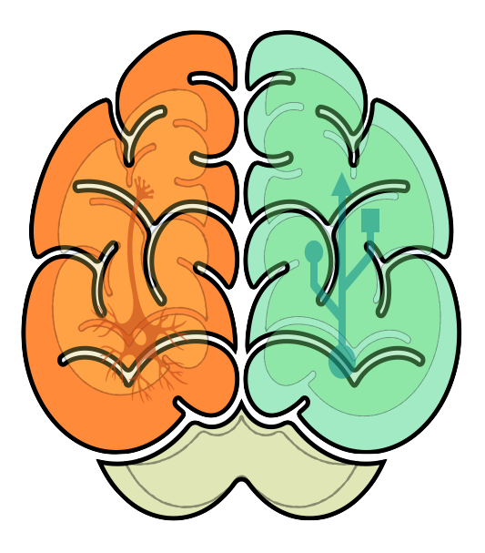
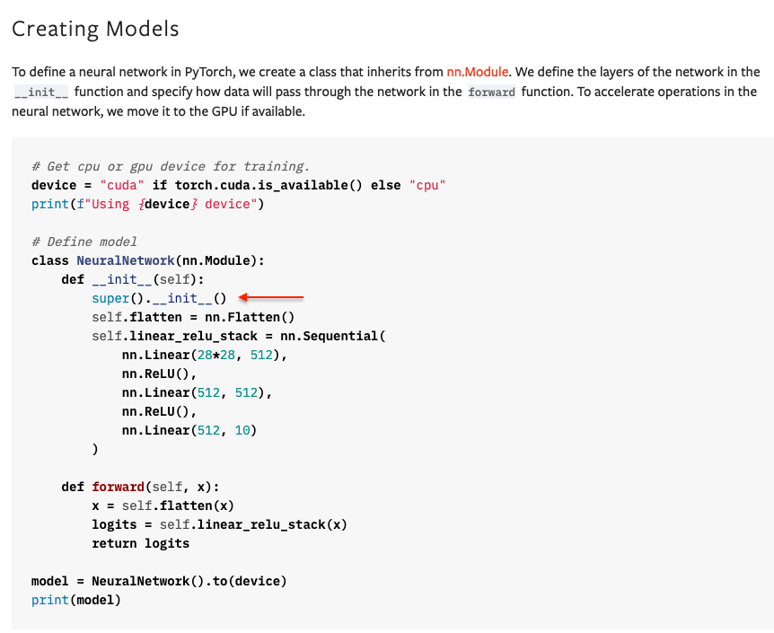
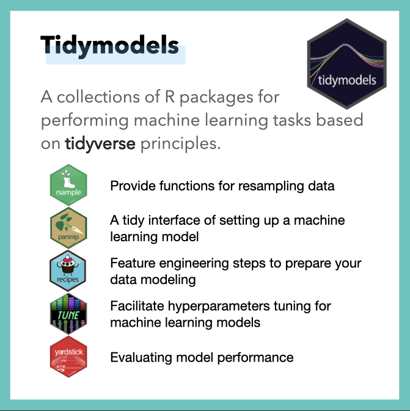
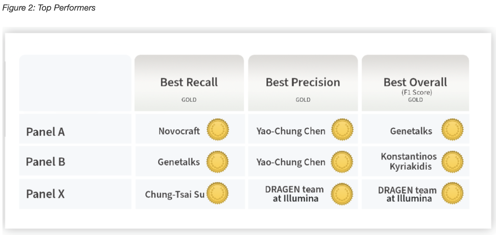
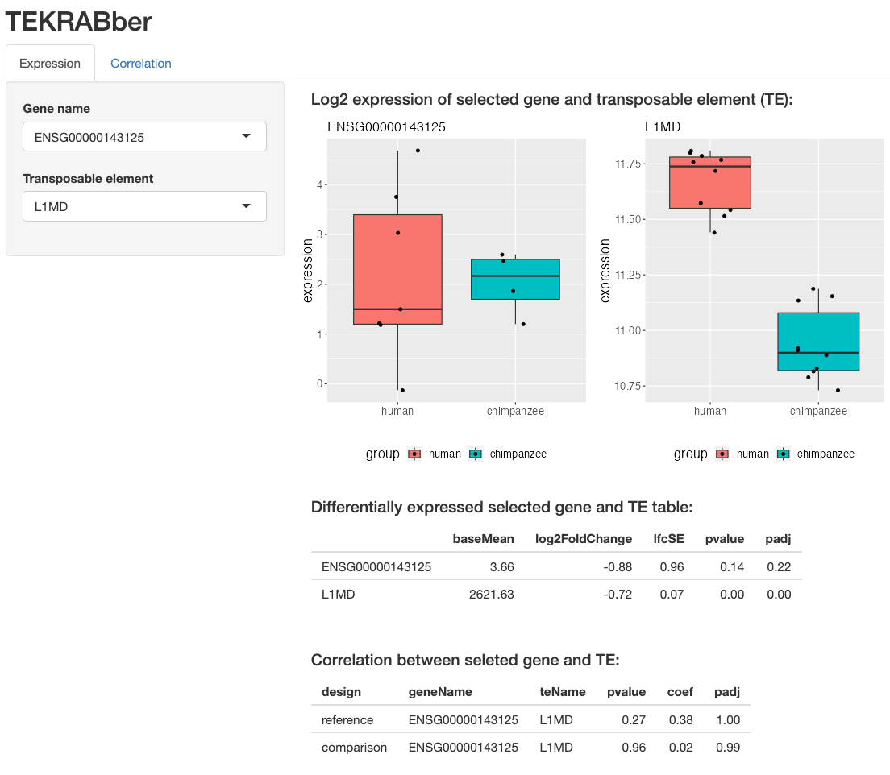

Yao-Chung
About
Posts
Projects
Resume
On this page
Posts
Projects
Categories
Bioconductor
ChatGPT
MEM
R
Streamlit
conference
correlation
indel
intern
machine learing
precisionFDA
presentation
python
software
super()
transposable elements
Posts
2nd Münster Evolution Meeting (MEM 2023)
Mar 18, 2023

Super Python: super() a superclass method in python
Jan 1, 2023
Release my new instagram account
Dec 16, 2022

Internship @ Miltenyi Biotec
Nov 30, 2022
No matching items
All posts
Projects
appChatGPT
Feb 5, 2023

NCTR Indel Calling Challenge
Sep 22, 2022

TEKRABber
Aug 15, 2022
No matching items
All projects